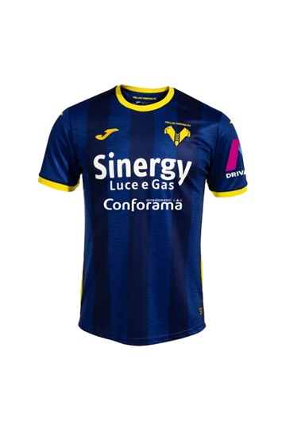
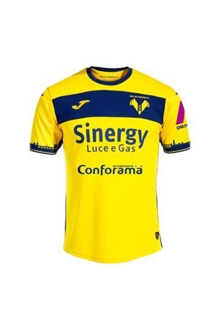
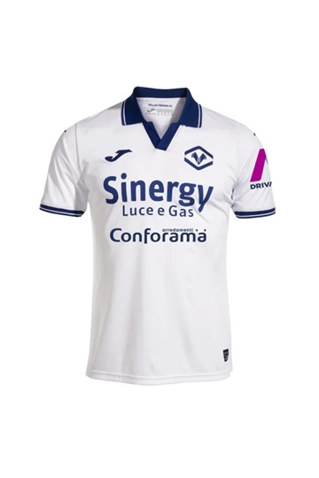
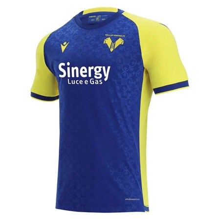
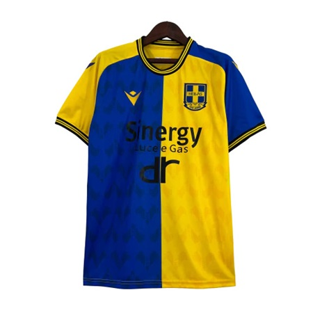
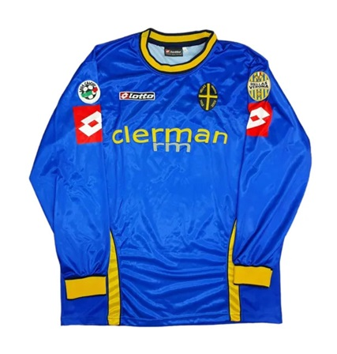
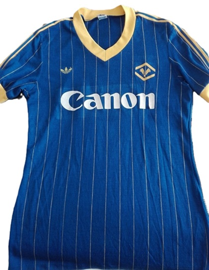
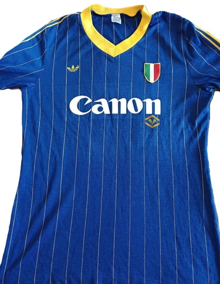

The home shirt of Hellas Verona traditionally features the colours yellow and blue, which have become symbols of the team throughout its history.
The away1 (away) shirt of Hellas Verona is generally yellow, offering a sharp contrast to the yellow-blue home shirt.
The away2 (away) shirt of Hellas Verona is generally white in colour, offering a sharp contrast to the yellow-blue home shirt.
This shirt was used by Verona in the season in which they finished 9th in the league table.
This is the jersey dedicated to the 120th anniversary of the company's creation.
This is the jersey dedicated to 100 years since the creation of the company.
This is the shirt from the historic championship won by Verona in the 1984/1985 season
This is the jersey of the year following the historic championship won by Verona in the 1984/85 season, with the tricolour scudetto.
